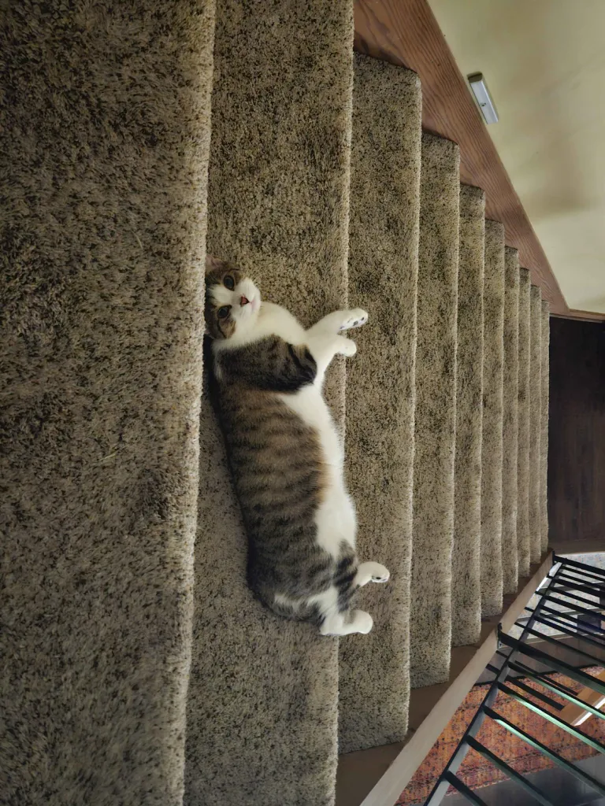

Introduction
Conn Henesy | Conspicuous Heridean

I’m Conn, a CPCC transfer student majoring in cybersecurity. This is my second attempt at this class; the late policy snuck up on me last semester, so I had to withdraw. Evidently something similar has happened again, but the class is required for my concentration, so I’m hoping I can push through this time.
- Personal Background: I was born in Alabama and got moved around the state for a while before landing in Charlotte in elementary school.
- Professional Background: I volunteered as an election official in 2024. I’m hoping to get professional experience in cybersecurity.
- Academic Background: I received an Associate in Arts from CPCC in 2025. I am on track to graduate with a Bachelors in Science with a concentration in cybersecurity in 2027.
- Primary Work Computer: Custom-built desktop running Windows 11.
- Primary Work Location: My apartment just off campus.
- Alternate Computer & Location: I have a crummy laptop for use on campus as well as another desktop at my parents’ house.
- Courses I'm Taking, & Why:
- ITIS3135 - Front-End Web Development: Required for my concentration.
- ITSC-2175 - Logic and Algorithms: Required for my major.
- ITSC-3146 - Introduction to Operating Systems: Required for my major.
- STAT-2122 - Intro to Probability & Statistics: Required for my concentration. It's rough out here.
"Because it's there."-George Mallory, on why he climbed Mount Everest